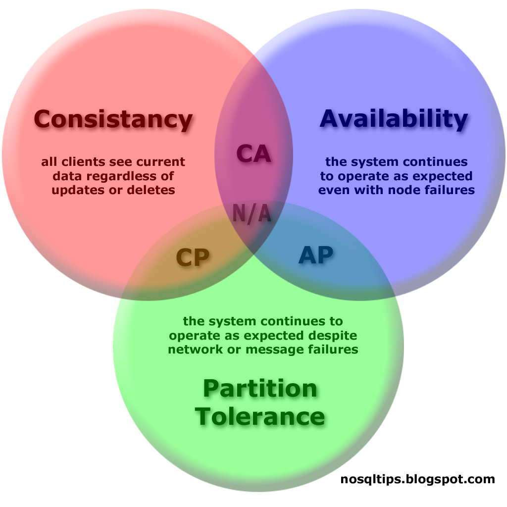

Command Query Responsibility Segregation
Event Sourcing
Moda czy konieczność?
Co to jest?
CQRS - Command Query Responsibility Segregation
ES - Event Sourcing
Terminologia
Comand - komenda, polecenia zmieniające stan systemu
Query - zapytanie zwracające dane, nie modyfikuje stanu systemu
Aggregate - grupa obiektów tworzących pewną całość
Aggregate Root - obiekt stanowiący "punkt wejścia" do agregatu
Event - zdarzenie, które zaszło
Skądś to znamy
Bazy danych: OLTP - OLAP
Protokół HTTP: POST - GET
Czy w "zwykłych" aplikacjach też tak można?
Wspólny model
Wspólny model
zapis
walidacja
synchronizacja
zwykle operuje na pojedynczym agregacie
odczyt
filtrowanie
konwersja, "spłaszczanie" danych
często operuje na wielu aggregatach (listy, raport)
CQRS na poziomie modelu
rozdzielnie zadań
unknięcie tworzenia pełnego modelu gdy nie jest potrzebny
widok konsumuje płaskie DTO (może wymagać konwersji danych)
CQRS na poziomie modelu i bazy danych
schemat danych i technologia dostosowana do potrzeb
skalowalność
synchronizacja - AR callbacks, oplog, etc.
Zalety
uproszenie modeli
wydajność i skalowalność
Wady
konieczność utrzymywania dwóch modeli
duplikacja danych (wiele baz oraz denormalizacja)
komplikacja infrastruktury
synchronizacja danych i opóźnienia
Eventual consistency
 "odporność na podział" kosztem spójności danych
Event Sourcing
bardzo często występuje razem z CQRS
rozwiązuje inne problemy niż CQRS
Problem trwałości danych
transaction script
active record
object-relational mapping
event sourcing
Event Sourcing
każda akcja domenowa powoduje wygenerowanie eventu (eventów)
nie zapisujemy stanu obiektów (ORM) tylko historię zdarzeń (eventy)
brak konieczności mapowań między eventach a schematem danych
eventy są prostymi DTO
nie można modyfikować eventów (tylko dodawać nowe)
eventy mogą być dodatkowo przetwarzane przez domene (i generować kolejne)
Journaling
stosowany w systemach plików i bazach danych
Event Sourcing + CQRS
command database - event store
query database - database created from events
Zalety
Wady
Literatura
http://msdn.microsoft.com/en-us/library/jj554200.aspx
http://martinfowler.com/bliki/CQRS.html
http://www.jayway.com/2013/03/08/aggregates-event-sourcing-distilled/
http://www.slideshare.net/cavalle/the-cqrs-diet
http://en.wikipedia.org/wiki/CAP_theorem
http://martinfowler.com/eaaCatalog/
←
→
#
/